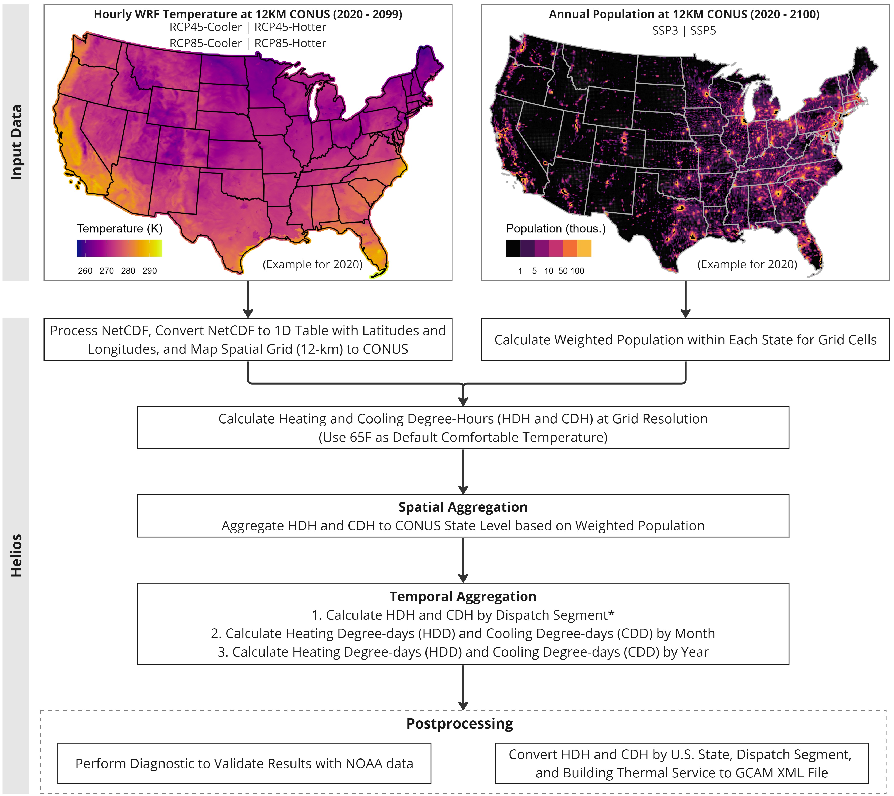

Input Data

helios is an R package that calculates heating and
cooling degrees based on high temporal and spatial resolution of climate
data (hourly and 12km resolution) and population data (yearly and 12km
resolution). In this tutorial, we introduce how to use
helios to support GCAM-USA, where we use climate data over
CONUS from WRF or those with the same format and spatial resolution.
Data are available on NERSC if users have access. Table 1 shows more details on the climate and
population data supported by helios.
* This method was developed for the GCAM-USA version as part of the Integrated Multisector, Multiscale Modeling (IM3) project.
Table 1: Description of required input data in this tutorial.
| Specification | WRF Climate Data | Population Data |
|---|---|---|
| Input Format | NetCDF File | CSV File |
| Spatial Resolution | WRF Resolution: 12 x 12 km | WRF Resolution: 12 x 12 km |
| Temporal Resolution | Hourly | Annual |
| Required Variable | Temperature T2 (K) | Population (Capita) |
| Cluster Location | (NERSC) /global/cfs/cdirs/m2702/gsharing/tgw-wrf-conus | (NERSC) /global/cfs/cdirs/m2702/gcamusa/hddcdd/pop_1km |
| Full Dataset Download | N/A | (Pre-processed) https://zenodo.org/record/3756179#.Y5fLK3bMKUl |
| Example Dataset | helios::example_wrf_usa_ncdf |
helios::example_pop_usa_csv |
| More Information | https://www.mmm.ucar.edu/models/wrf | https://www.mdpi.com/2071-1050/12/8/3374 |
Please note that helios can process multiple climate
NetCDF files with one population CSV file for each run. However,
parallelizing grouped climate data can improve calculation efficiency
for large dataset.
Workflow
helios includes 6 major steps in the workflow for CONUS
heating- and cooling-degrees calculation (Figure
1),
- Step 1: Process climate NetCDF at 12-km resolution.
- Step 2: Calculate weighted population.
- Step 3: Calculate heating and cooling degree-hours at grid resolution.
- Step 4: Aggregate heating and cooling degree-hours by CONUS and building energy demand sector (This can be used as input to GCAM-USA).
- Step 5: Calculate heating and cooling degree-days at monthly and annual scale for CONUS.
- Step 6: Post-process for diagnostic and convert to GCAM required format.
*Note: Dispatch segments are defined as 24 day and night segments in each month of the year (e.g., Jan-day, Jan-night, Feb-day, Feb-night, etc), plus a “super-peak” segment that has the top 10% of loads within a year for each grid region. Dispatch segments are specifically used in GCAM-USA.

Figure 1: Helios workflow for CONUS heating and cooling degree-days for GCAM-USA.
Method
helios calculates different units of heating and cooling
degrees for different temporal scale. Table 2
shows more details of the method
Table 2: Methods for calculating heating and cooling degrees at different temporal scales.
| Temporal Scale | Spatial Scale | Sector | Unit | Method |
|---|---|---|---|---|
| Dispatch Segment | U.S. States | Building Thermal Service* | Degree-hours | 1. Calculate heating degree-hours (HDH) and cooling degree-hours
(CDH) as the difference between hourly temperature and comfortable
temperature (65F). \[HDH = T_i - T_{comfort}, \ if \ T_i < T_{comfort}\] \[CDH = T_i - T_{comfort}, \ if \ T_i > T_{comfort}\] where, \(T_i\) is the hourly temperature at a grid cell; \(T_{comfort}\) is the comfortable temperature (usually 65F for USA). 2. Multiply the weighted population with degree-days within the same grid cell. 3. Aggregate hourly HDH and CDH by dispatch segment, U.S. States, and building energy demand sectors. |
| Monthly | U.S. States | N/A | Degree-days | 1. Calculate daily mean temperature as the average of minimum and
maximum daily temperature. 2. Calculate heating degree-days (HDD < 0) and cooling degree-days (CDD > 0) as the difference between mean temperature and comfortable temperature (65F). 3. Aggregate daily HDD (HDD < 0) and CDD (CDD > 0) by monthly, respectively. |
| Annual | U.S. States | N/A | Degree-days | 1.Aggregate monthly HDD (HDD < 0) and CDD (CDD > 0) by year, respectively. |
* Building thermal service includes: commercial heating, commercial cooling, residential heating, and residential cooling.
Examples
Example climate and population dataset
Due to large size of the climate data (netCDF file),
helios provide spatially subsetted example dataset for
demonstration purpose.
-
Climate NetCDF File:
helios::example_wrf_usa_ncdfsubsets subsets an approxmitely [-119.86,-118.18,37.99, 39.30] longitude and latitude box within the U.S. (12-km resolution) from the WRF hourly data. Data time ranges from 2020-01-01 01:00:00 to 2020-01-08 00:00:00. -
Population CSV File:
helios::example_pop_usa_csvis population for 2020, which is geo-referenced to WRF grid cells.
Calculate heating and cooling degrees
The following example specifies the arguments for processing WRF
dataset. More information for the arguments can be found in
(helios::hdcd Reference)[https://jgcri.github.io/helios/reference/hdcd.html].
-
ncdf_var = 'T2'specifies climate variable to extract from the netCDF, which is temperature in this case. -
model = 'wrf'specifies the model used to produce the climate forcing data, which is WRF model in this case. -
spatial = 'states_us_49'specifies we are only calculating the cooling and heating degrees within 49 states of USA. This will produce outputs that can be used forGCAM-USA. For tutorial of usingheliosfor global 32 regions, please check out GCAM-regions tutorial page. -
temporal = 2020specifies the time period 2020 to include since the example data only covers 7 days in 2020.
library(helios)
# example data: WRF hourly climate at 12-km resolution
path_to_climate_ncdf <- helios::pkg_example('wrfout_d01_2020-01-01_01%3A00%3A00_sub.nc')
# example data: population of 2020 at same 12-km resolution as WRF
path_to_population <- helios::pkg_example('population_conus_ssp2_2020wrf_wgs84.csv')
# Calculate heating and coolong degrees for CONUS (e.g., part of USA in the example)
hdcd_usa <- helios::hdcd(ncdf = path_to_climate_ncdf,
ncdf_var = 'T2',
model = 'wrf',
population = path_to_population,
spatial = 'states_us_49',
temporal = 2020,
reference_temp_F = 65,
folder = paste0(getwd(), "/output"),
diagnostics = F,
xml = F,
name_append = "",
save = F)## [1] "Starting function process_hdcd..."
## [1] "Processing files provided: /Users/runner/work/_temp/Library/helios/extras/wrfout_d01_2020-01-01_01%3A00%3A00_sub.nc"
## [1] "........................................."
## [1] "Running hdcd for file: /Users/runner/work/_temp/Library/helios/extras/wrfout_d01_2020-01-01_01%3A00%3A00_sub.nc"
## [1] "vobjtovarid4: **** WARNING **** I was asked to get a varid for dimension named west_east BUT this dimension HAS NO DIMVAR! Code will probably fail at this point"
## [1] "vobjtovarid4: **** WARNING **** I was asked to get a varid for dimension named south_north BUT this dimension HAS NO DIMVAR! Code will probably fail at this point"
## [1] "vobjtovarid4: **** WARNING **** I was asked to get a varid for dimension named Time BUT this dimension HAS NO DIMVAR! Code will probably fail at this point"
## [1] "vobjtovarid4: **** WARNING **** I was asked to get a varid for dimension named west_east BUT this dimension HAS NO DIMVAR! Code will probably fail at this point"
## [1] "vobjtovarid4: **** WARNING **** I was asked to get a varid for dimension named south_north BUT this dimension HAS NO DIMVAR! Code will probably fail at this point"
## [1] "vobjtovarid4: **** WARNING **** I was asked to get a varid for dimension named Time BUT this dimension HAS NO DIMVAR! Code will probably fail at this point"
## [1] "vobjtovarid4: **** WARNING **** I was asked to get a varid for dimension named west_east BUT this dimension HAS NO DIMVAR! Code will probably fail at this point"
## [1] "vobjtovarid4: **** WARNING **** I was asked to get a varid for dimension named south_north BUT this dimension HAS NO DIMVAR! Code will probably fail at this point"
## [1] "vobjtovarid4: **** WARNING **** I was asked to get a varid for dimension named Time BUT this dimension HAS NO DIMVAR! Code will probably fail at this point"
## [1] "Starting population weighting ..."
## [1] "Completed population weighting."
## [1] "Processing hdcd completed for file: /Users/runner/work/_temp/Library/helios/extras/wrfout_d01_2020-01-01_01%3A00%3A00_sub.nc"
## [1] "process_hdcd completed."The output is a list containing three tables. Please note the different units (degree-hours or degree-days) for different outputs.
-
hdcd_usa$hdcd_comb: Heating and cooling degree-hours by dispatch segment for CONUS and by building thermal service. -
hdcd_usa$hdcd_comb_monthly: Heating and cooling degree-days by month for CONUS (part of USA in the example). -
hdcd_usa$hdcd_comb_annual: Heating and cooling degree-days by year for CONUS (part of USA in the example).
# Heating and cooling degree-hours by dispatch segment and by building thermal service for CONUS
hdcd_segment <- hdcd_usa$hdcd_comb
knitr::kable(hdcd_segment,
caption = 'Annual Heating and Cooling Degree-hours by Building Thermal Service')| region | subRegion | year | segment | gcam.consumer | nodeInput | building.node.input | thermal.building.service.input | unit | value |
|---|---|---|---|---|---|---|---|---|---|
| USA | CA | 2020 | Dec_day | comm | comm | comm_building | comm heating Dec_day | degree-hours | -0.0114599 |
| USA | CA | 2020 | Dec_day | resid | resid | resid_building | resid heating Dec_day | degree-hours | -0.0114599 |
| USA | CA | 2020 | Dec_night | comm | comm | comm_building | comm heating Dec_night | degree-hours | -0.0414882 |
| USA | CA | 2020 | Dec_night | resid | resid | resid_building | resid heating Dec_night | degree-hours | -0.0414882 |
| USA | CA | 2020 | Jan_day | comm | comm | comm_building | comm heating Jan_day | degree-hours | -0.3393844 |
| USA | CA | 2020 | Jan_day | resid | resid | resid_building | resid heating Jan_day | degree-hours | -0.3393844 |
| USA | CA | 2020 | Jan_night | comm | comm | comm_building | comm heating Jan_night | degree-hours | -0.6256360 |
| USA | CA | 2020 | Jan_night | resid | resid | resid_building | resid heating Jan_night | degree-hours | -0.6256360 |
| USA | NV | 2020 | Dec_day | comm | comm | comm_building | comm heating Dec_day | degree-hours | -1.0170742 |
| USA | NV | 2020 | Dec_day | resid | resid | resid_building | resid heating Dec_day | degree-hours | -1.0170742 |
| USA | NV | 2020 | Dec_night | comm | comm | comm_building | comm heating Dec_night | degree-hours | -3.7933185 |
| USA | NV | 2020 | Dec_night | resid | resid | resid_building | resid heating Dec_night | degree-hours | -3.7933185 |
| USA | NV | 2020 | Jan_day | comm | comm | comm_building | comm heating Jan_day | degree-hours | -30.8660315 |
| USA | NV | 2020 | Jan_day | resid | resid | resid_building | resid heating Jan_day | degree-hours | -30.8660315 |
| USA | NV | 2020 | Jan_night | comm | comm | comm_building | comm heating Jan_night | degree-hours | -57.7348273 |
| USA | NV | 2020 | Jan_night | resid | resid | resid_building | resid heating Jan_night | degree-hours | -57.7348273 |
# Heating and cooling degree-days at monthly scale for CONUS
hdcd_monthly <- hdcd_usa$hdcd_comb_monthly
knitr::kable(hdcd_monthly,
caption = 'Monthly Heating and Cooling Degree-days')| region | subRegion | year | month | HDCD | unit | value |
|---|---|---|---|---|---|---|
| USA | CA | 2020 | 01 | CD | degree-days | 0.0000000 |
| USA | CA | 2020 | 01 | HD | degree-days | -0.0483388 |
| USA | NV | 2020 | 01 | CD | degree-days | 0.0000000 |
| USA | NV | 2020 | 01 | HD | degree-days | -4.3027594 |
# Heating and cooling degree-days at annual scale for CONUS
hdcd_annual <- hdcd_usa$hdcd_comb_annual
knitr::kable(hdcd_annual,
caption = 'Annual Heating and Cooling Degree-days')| region | subRegion | year | HDCD | unit | value |
|---|---|---|---|---|---|
| USA | CA | 2020 | CD | degree-days | 0.0000000 |
| USA | CA | 2020 | HD | degree-days | -0.0483388 |
| USA | NV | 2020 | CD | degree-days | 0.0000000 |
| USA | NV | 2020 | HD | degree-days | -4.3027594 |
*Note: Please note that we use a spatial subset of
WRF input climate NetCDF data as an example, which only covers 7 days.
To get heating and cooling degrees for a complete year, users need to
run climate NetCDF files using helios that cover the length
of a year. For example, if each climate NetCDF is for 7-days, then user
need to include about 52 climate NetCDF to cover a whole year of climate
data. Then, users can use helios::diagnostic to create
plots to check heating and cooling degree behaviors throughout a
year.
Diagnostics
After getting the data table for heating and cooling degrees, users can perform diagnostics and compare with NOAA observations if data covers the U.S. The diagnostics create the following plots at segment and monthly time step:
- Heating and cooling degrees for each year
- Comparison of heating and cooling degrees among all years
Users can also use helios::diagnostics to visualize any
heating and cooling degree data as long as they include those columns in
the monthly data or the segment data: [subRegion, year, month/segment,
HDCD, value]
# Heating and cooling degree-hours by dispatch segment
knitr::kable(helios::example_hdcd_segment_usa[1:4,],
caption = 'Heating and Cooling Degree-hours by Segment')| subRegion | year | segment | value | HDCD |
|---|---|---|---|---|
| AL | 2020 | Apr_day | 1658.2854 | CD |
| AL | 2020 | Apr_day | -927.7123 | HD |
| AL | 2020 | Apr_night | 118.5805 | CD |
| AL | 2020 | Apr_night | -2939.6348 | HD |
# Heating and cooling degree-days by month
knitr::kable(helios::example_hdcd_monthly_usa[1:4,],
caption = 'Monthly Heating and Cooling Degree-days')| subRegion | year | month | HDCD | value |
|---|---|---|---|---|
| AL | 2020 | 1 | HD | -554.602736 |
| AL | 2020 | 2 | CD | 3.119958 |
| AL | 2020 | 2 | HD | -720.422022 |
| AL | 2020 | 3 | CD | 6.460285 |
If the data coverage is too short (e.g., less than 6 months),
diagnostics will not create plot by default. Users can change the
constraint on numbers of months in the data using argument
min_diagnostic_months to enable diagnostics even with short
data coverage. The followings show how to use diagnostics with example
outputs of heating and cooling degrees at both segment and monthly time
step.
# Perform diagnostic on monthly data
helios::diagnostics(hdcd_monthly = helios::example_hdcd_monthly_usa,
min_diagnostic_months = 6,
folder = paste0(getwd(), "/output"),
name_append = 'monthly')

Figure 2: Diagnostics for monthly heating and cooling degree-days from 2020 to 2050.
Segment output , set spatial = 'states_us_49' to
indicate the data
# Perform diagnostic on segment data
helios::diagnostics(hdcd = helios::example_hdcd_segment_usa,
spatial = 'states_us_49',
min_diagnostic_months = 6,
folder = paste0(getwd(), "/output"),
name_append = 'segment')

Figure 3: Diagnostics for heating and cooling degree-hours by dispatch segment from 2020 to 2050.
XML file for GCAM-USA
Finally, for GCAM users, helios can save the outputs by
building thermal service to XML format, which is a required format for
GCAM inputs. Set xml = TRUE in the
helios::hdcd function will save the XML file to the output
folder.